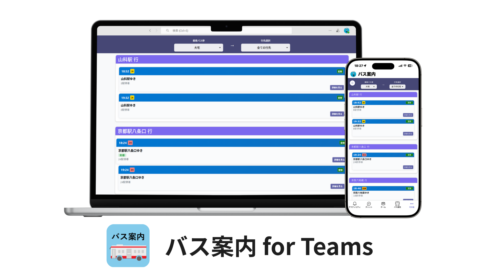

Microsoft Teamsアプリを用いたバス案内アプリケーション
アプリケーションの開発概要
※展示イベントのシステム説明ポスターより
●開発概要
本アプリケーションは、京都橘大学の学生を含む関係者が通勤・通学に利用する公共交通機関である京阪バスの時刻表や運行状況を、簡単に確認できるようにすることを目的としている。 京都橘大学では、授業連絡や課題提出、各種連絡に Microsoft Teams を使用しており、学生・教員・事務局の関係者が日常的に利用している。 Teams には、組織内で利用可能なアプリケーションを公開する機能がある。本プロジェクトでは、この機能を活用してバス案内アプリケーションを開発し、京都橘大学の Teams アカウントを持つ関係者が、組織内アプリとして利用できる環境の構築を目指している。 本取り組みは、学生自治会から大学に対して寄せられた「公共交通機関の利便性を向上させたい」という要望を背景としており、特に「どのバスに乗れば効率よく目的地へ移動できるのかを、素早く判断できる手段が欲しい」という課題の解決を目的として、学生自治会と連携しながら進めている。 バスの時刻表および運行状況の情報は、自身が開発した LSSプロジェクト の解析アルゴリズムを用いて、京阪バス株式会社が運営する「バスナビ」から自動的に収集する。 これらの情報を本アプリケーションを通じて提供することで、学生・大学関係者が手軽に最新のバス運行情報を取得できる環境を整えるとともに、 アプリケーション公開後には、通学時の移動判断や待ち時間の短縮といった観点から、 学生の通学に関する効率がどのように改善されるかを調査することも本プロジェクトの目的に含まれている。
●ToolKit

本開発では、Microsoft 365 Agents Toolkit(旧Microsoft Teams Toolkit)を使用した。
Microsoft 365 Agents Toolkitは、Microsoft Teamsアプリケーションの開発を支援するためのツールキットであり、アプリケーションの作成、デバッグ、デプロイメントを容易にする機能が提供されている。
このツールキットを活用することで、開発者は効率的にアプリケーションを構築し、Microsoft Teams 環境に統合することが可能となる。
詳細: Microsoft 365 Agents Toolkit
アプリケーションの主な機能
乗車バス停と行き先を指定すると、 その方向へ向かうバスの情報を一覧で確認できる。
本システムの構成
本システムは、以下に示す4つの主要なコンポーネントによって構成されている。 バックエンドサーバーには、 LSSプロジェクト のシステムの一部を応用し、本システム向けに拡張・再構成したものを使用している。 システムの開発言語には Python を採用している。 フロントエンドのアプリケーションは、リバースプロキシによって公開された DNS 名を通じて Web サーバーへ接続し、バス情報を取得する仕組みとなっている。 LSS プロジェクトでは、解析プログラムがスタンドアロンで京阪バスから直接情報を取得する構成であった。 しかし、本システムでは京阪バス側サーバーへの負荷を考慮し、 解析プログラムを単一のプロセスとして動作させ、その解析結果を一度データベースに保存した上で、 複数のクライアントへ配信する構成へと変更している。
- バス情報収集
- DB(データベース)
- Webサーバー
- DNS・リバースプロキシ・WAF
バスの時刻表および運行状況の情報を定期的に取得し、2つの情報を1つの便の情報としてまとめた後、 データベースへ保存する役割を担う。
収集したバス情報を一時的に保管し、要求に応じて各種プログラムへデータを提供する役割を担う。
データベースに保存されたバス情報を取得し、アプリケーションの要求に応じて Teamsアプリケーションへ配信する役割を担う。
外部のクラウド型ネットワークサービスを利用し、 グローバルDNSの管理、リバースプロキシによるトラフィック制御、 およびWAF機能による不正アクセス対策を行っている。
利用方法
・アプリケーションのインストール方法
バス案内アプリケーションのインストール方法は以下の通りである。
※なお、本アプリケーションは京都橘大学組織内アプリケーションとして公開しているため、
st.tachibana-u.ac.jp、tachibana-u.ac.jpに所属するMicrosoft Teams アカウントを持つユーザのみがインストール可能である。
1. PC版
2. モバイル版

●トラブルシューティング(Q&A)
- モバイル版で、ナビゲーションバーにバス案内を追加できない
- アプリのアイコンが正しく表示されない。バスアイコンにならない。
- バス案内アプリが表示されない。
- モバイル版Teamsでバス案内アプリをインストールしたいのに、Add appから見つけられない。
→ナビゲーションバーには、６つまでのアプリしか表示できないため、ナビゲーションバーのアプリを整理する必要があります。
→モバイル版Teamsアプリでよく見られる現象です。これは、Teamsアプリのキャッシュが原因である可能性があります。アプリのキャッシュをクリアするか、しばらく様子を見てください。本来の機能には何ら支障はありません。
→アプリの動作が遅い場合、バックグラウンドで動作している他のアプリやプロセスが影響している可能性があります。不要なアプリを終了するか、Teamsアプリ・デバイスを再起動してみてください。
→PC版Teamsですでにインストール済みであれば、モバイル版にも反映されてインストールされている可能性があります。モバイル版Teamsアプリ右下の「その他」をタップして、バス案内アプリが存在するか確認してください。
→初めてモバイル版Teamsアプリでバス案内アプリをインストールする場合、その他>Add app>「あなたの組織で人気」の項目に表示される可能性があります。
苦労話(学内デプロイは学生の範疇では完結しない)
本システムの学内デプロイにあたっては、情報システム課との事前確認および調整が必要であった。 組織の Microsoft Teams アカウントでは、Teams Developer Portal を通じて、 開発したアプリケーションのデプロイを組織管理者に申請することが可能である。 しかし、当学の情報システム課においては、学生が開発したアプリケーションを 学内向けにデプロイした前例がなく、加えてセキュリティポリシーの観点からも 慎重な対応が求められた。 そのため、デプロイ申請後に情報システム課との協議の場が設けられ、 システム全体の構成、データの取り扱い、ならびにセキュリティ対策について 詳細な説明を行った。 その後、指摘された点に基づいてシステムの改善を行い、 複数回の協議を経て、最終的に学内デプロイを完了することができた。 本経験を通じて、学内システムのデプロイには技術的な実装力だけでなく、 組織のポリシーを理解した上での説明能力や、 関係者との継続的なコミュニケーションが重要であることを学んだ。